tof2M
Mean anomaly from time of flight.
Back to Aerospace Simulation Toolbox Contents.
Contents
Syntax
M = tof2M(M0,n,TOF) M = tof2M(M0,n,t,t0) [M,k] = tof2M(__)
Description
M = tof2M(M0,n,TOF) finds the current mean anomaly, 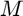, given the initial mean anomaly (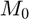), mean motion (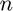), and time of flight (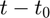) since .
M = tof2M(M0,n,t,t0) finds the current mean anomaly, , given the initial mean anomaly (), mean motion (), current time (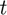), and initial time 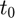.
[M,k] = tof2M() does the same as the previous two syntaxes, but also returns the integer number of completed orbits, 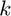.
Input/Output Parameters
| Variable | Symbol | Description | Format | Units | |
| Input | M0 | initial mean anomaly | 1×1 double |
rad | |
| n | mean motion | 1×1 double |
rad/s | ||
| TOF or t |
or |
time of flight or current time |
1×1 double |
s | |
| t0 | (OPTIONAL) initial time (defaults to 0) | 1×1 double |
s | ||
| Output | M | current mean anomaly | 1×1 double |
rad | |
| k | integer number of completed orbits | 1×1 double |
- |
Example #1: Given time of flight.
Find the current mean anomaly (in radians) given the initial mean anomaly 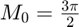, mean motion 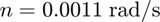, and a time of flight of 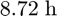.
Converting the time of flight to seconds,
TOF = 8.72*3600;
Finding the current mean anomaly (in radians) and the integer number of completed orbits,
[M,k] = tof2M(3*pi/2,0.0011,TOF)
M =
1.5445
k =
-1
Example #2: Given initial and current times.
Find the current mean anomaly (in radians) given the initial mean anomaly , mean motion , initial time 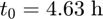, and current time 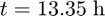.
Converting the times to seconds,
t0 = 4.63*3600; t = 13.35*3600;
Finding the current mean anomaly (in radians) and the integer number of completed orbits,
[M,k] = tof2M(3*pi/2,0.0011,t,t0)
M =
1.5445
k =
-1